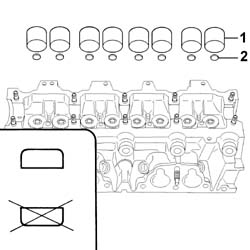
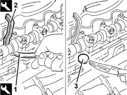

1036H10 VALVE TAPPETS - CHECK AND ADJUST CLEARANCE
- Path
- Procedures > 10 ENGINE UNIT > 1036 TIMING SYSTEM > 1036H TAPPETS AND ROCKER SHAFTS > 1036H10 VALVE TAPPETS - CHECK AND ADJUST CLEARANCE
- Kind
- repair procedure (removal / refitting; the operation number is the code)
- Applies to
- engines: 2.0 16V, 2.8 JTD 8V; all production periods
- Interactive page
- https://sloeber94.github.io/elrnDB-fDct/en/#/244000720
Applies to: engines: 2.0 16V; all production periods
Op. 1048A31 RIGID PIPE CONNECTING AIR CLEANER TO INLET MANIFOLD RIGID PIPE R R
See in Op. 1016A20
See in Op. 1036H14
- If the clearance does not correspond to the recommended figure, carry out the adjustment.
See in Op. 1036B10
1. Remove the tappets.
2. Remove a calibrated pad and measure its thickness.
- Determine the difference between the clearance measured and the recommended clearance for that pad.
- Determine the thickness of the pad to be used by adding the thickness of the current pad to the difference measured.
- Repeat the procedure for all the calibrated pads.
- Fit the tappets in the housing.

Applies to: engines: 2.0 16V; all production periods
See in Op. 1036B10
- Proceed with the refitting
See in Op. 1016A20
Op. 1048A31 RIGID PIPE CONNECTING AIR CLEANER TO INLET MANIFOLD RIGID PIPE R R
Applies to: all engines; all production periods
See in Op. 1016A10
See in Op. 1016A20
Op. 4450B04 RIGHT FRONT WHEEL R R
See in Op. 1036H14
1. Lower the tappet in question using a suitable tool.
 | Description | Code | Function |
|---|---|---|---|
1 | Lever | 1.860.443.000 | Lower tappets |
2. Fit the tool for keeping the tappet lowered, then remove the pressure lever positioned previously.
| Description | Code | Function |
|---|---|---|---|
2 | Lever | 1.860.724.001 | Keep tappets lowered |
3. Remove the valve clearanance adjustment plate and replace it with a one of a suitable thickness.
- Remove the tool for keeping the tappet lowered.
- Continue, repeating the procedure described for the remaining valves.

Applies to: all engines; all production periods
See in Op. 1036H14
Op. 4450B04 RIGHT FRONT WHEEL R R
See in Op. 1016A20
See in Op. 1016A10
Topics linked from this page (2)
- 1048A31 RIGID PIPE CONNECTING AIR CLEANER TO INLET MANIFOLD RIGID PIPE R R
- 4450B04 RIGHT FRONT WHEEL R R